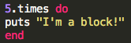
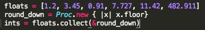
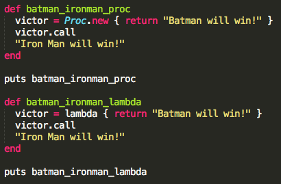

A block is just a bit of code between do...end or {}. It is not an objoect on its own, but it can be passed ot methods like .each or .select
A proc is a saved block we can use over and over.
A lambda is just like a proc, only it cares about the number of arguments it gets and it returns to its calling method rather than returning immediately.
What does this all mean? Well for starters let's give an example of a block. Below is a basic example of a block. This block will print "I'm a block" 5 times
Next up is the proc. This is just a saved block you can use over and over. Below is how you define and call a proc. In this example we used .collect(&round_down), but you can also use call procs using .call.
Lastly we have lambdas. Lambdas are the same as procs except they return to the calling method rather than returning immediately.
In the example provided the first method is a proc and will immediately return "Batman will win!". The second method is a lambda and instead of immediately returing "Batman will win" it waits to see if there is anything to return. In this case "Iron Man will win!" is the last string to return. So to summarize batman_ironman_proc will return "Batman will win!" and batman_ironman_lambda will return "Iron Man will win!"